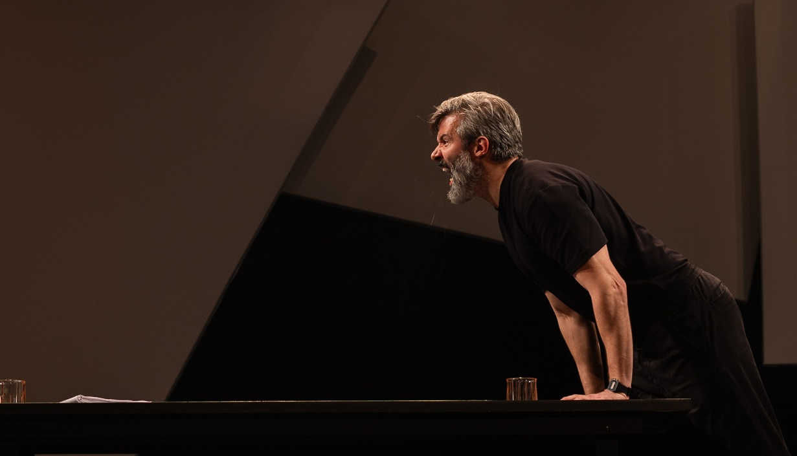

Teatro


ATOR · AUTOR · CRIADOR MULTIMÍDIA

Gustavo Vaz é ator, autor e criador multimídia, com 22 anos de trajetória profissional. Ao lado de um percurso consistente no teatro e no audiovisual, desenvolve desde 2012, na ExCompanhia, uma investigação continuada em torno de presença, escuta, dramaturgia, experiência e mediação.
Ao longo desse percurso, criou trabalhos que atravessam dramaturgias site-specific, imersões sonoras, dispositivos digitais e formas de reorganização da posição do público. A pesquisa se estrutura em diálogo com transformações culturais, tecnológicas e territoriais do presente, e cada obra desloca procedimentos sem abandonar as questões que sustentam o campo de investigação.
Sua trajetória internacional inclui residências, apresentações e intercâmbios na Alemanha, em Portugal, em Montenegro e na Suíça. Em paralelo à pesquisa autoral, construiu uma carreira sólida como ator, reconhecida com os prêmios Shell e Cesgranrio de Melhor Ator por Tom na Fazenda. No campo da dramaturgia, Frequência Ausente 19Hz recebeu o prêmio FIAT em Podgorica, Montenegro.
Nos últimos anos, esse eixo vem se concentrando de modo mais agudo na escrita dramatúrgica. Em 2023, publicou seu primeiro romance. Em 2025, estreou Terminal, texto original em formato palco-plateia. Atualmente desenvolve NATUREZA, novo estágio da pesquisa, voltado ao aprofundamento das relações entre voz, presença, dramaturgia e experiência humana em contextos contemporâneos.
Saiba mais